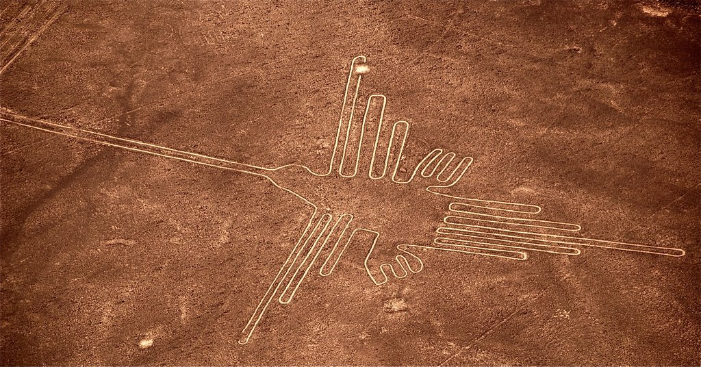
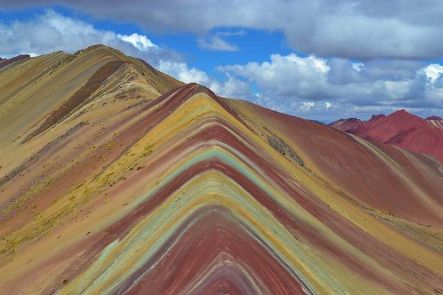
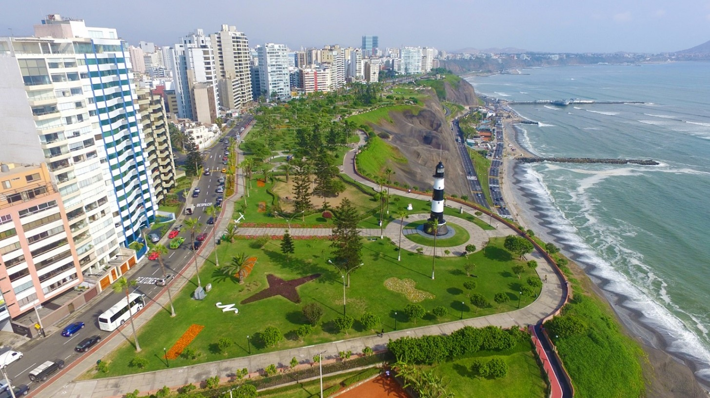

Las líneas de Nazca

Antiguos geoglifos que se encuentran en las Pampas de Jumana, en el desierto de Nazca, entre las poblaciones de Nazca y Palpa, en el departamento de Ica.
Fueron trazadas por la Cultura Nazca y están compuestas por varios cientos de figuras que abarcan desde diseños tan simples como líneas, hasta complejas figuras zoomorfas, fitomorfas y geométricas que aparecen trazadas sobre la superficie terrestre.
Las montañas de 7 colores

Vinicunca o Winikunka, llamada también Montaña de Siete Colores. Según la investigación de la Oficina Paisaje Cultural de la Descentralización de la Ciudad del Cusco, las coloraciones de esta montaña se deben a la composición mineralógica que tiene. El color rosado es por la arcilla roja, fangolitas, fango y arilitas (arena). El blanquecino, por la arenisca cuarzosa y margas, ricos en carbonato de calcio. El rojo por compuesto por las arcilitas (hierro) y arcillas pertenecientes al terciario superior. El verde se debe al compuesto de filitas y arcillas ricas en ferro magnesiano. El pardo terroso es producto de fanglomerado compuesto por roca con magnesio. Y el color amarillo mostaza por las areniscas calcáreas ricas en minerales sulfurados.
Miraflores

Gracias a su ambiente cosmopolita y su vista al Océano Pacífico es considerado el distrito turístico preferido por personalidades nacionales y extranjeras. Es el lugar con más habitantes con más posibilidades de dedicar tiempo a actividades de ocio y entretenimiento. En consecuencia, cuenta con varios establecimientos de vida nocturna, recintos culturales, centros comerciales y espacios convenientes para marcas de alta costura. A su vez, es visitado por muchos extranjeros, por lo que lidera en políticas de seguridad ciudadana.